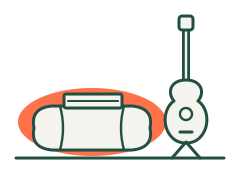

Wie wird aus einem Vorsatz eine Gewohnheit?
Eine Gewohnheit entsteht nicht durch Willenskraft, sondern durch Wiederholung. Du musst dafür nicht perfekt sein: Es reicht, wenn du immer wieder zu ihr zurückkehrst.
Kurz gesagt
- Plane konkret. Lege vorher fest, an welchem Tag, wann und wie lange du es machst, dann musst du nicht jedes Mal neu entscheiden.
- Fang kleiner an, als du denkst. Eine kurze Einheit, die wirklich stattfindet, ist mehr wert als eine lange, für die am Ende keine Zeit bleibt.
- Wiederhole es in derselben Situation. Wenn du es immer an denselben Moment knüpfst, erinnert dich mit der Zeit die Situation selbst daran.
- Halte fest, was passiert ist. Das Festhalten ist ein Spiegel, keine Note: Es zeigt, was funktioniert und was du ändern kannst.
- Achte darauf, was dir guttut. Nicht das ferne Ziel holt dich zurück, sondern das Gefühl, dass die Einheit selbst gutgetan hat.
- Wenn es ausgefallen ist, fang ohne Scham neu an. Eine Lücke macht das Bisherige nicht zunichte; auf lange Sicht zählt die Rückkehr.
- Mach es nicht allein. Es fällt leichter dranzubleiben, wenn jemand auf dich achtet und du auch auf jemanden achtest.
- Richte deine Umgebung ein. Bereite vor, was du brauchst, und leg es dir in Sichtweite; dabei kann die App nicht helfen, du aber schon.
Was ist eine Gewohnheit eigentlich?Eine Handlung, die eine vertraute Situation fast von selbst auslöst.
Am Anfang braucht jede Einheit eine Entscheidung: „Mache ich es jetzt?“ Wenn du sie aber oft in einer ähnlichen Situation wiederholst, ruft diese Situation (zum Beispiel morgens nach dem Kaffee) die Handlung immer mehr von selbst hervor. Dann kostet sie weniger Kraft.
Das braucht Zeit und ist bei jedem anders. In einer bekannten Studie wurde eine neue tägliche Handlung typischerweise (im Median) nach 66 Tagen nahezu automatisch. Die einzelnen Zeiten reichten jedoch von 18 bis 254 Tagen, und einfachere Handlungen (etwa ein Glas Wasser) wurden schneller zur Gewohnheit als aufwendigere (etwa Sport) [1]. Versprechen wie „in 21 Tagen“ sind also zu einfach. Wenn du mehr Zeit brauchst, ist das kein Fehler, sondern Teil der natürlichen Spannbreite.
Plane konkret: wann, wie lange, was.Ein konkreter Plan wirkt viel besser als ein Vorsatz.
„Diese Woche bewege ich mich mehr“ ist eine gute Absicht, sagt aber nicht, wann es losgeht. „Am Mittwoch nach der Arbeit gehe ich 20 Minuten im Park spazieren“ schon. In der Forschung heißt das Wenn-dann-Plan: Wenn die Situation kommt, dann mache ich das. Laut einer Auswertung von 94 Studien helfen solche Pläne in mittlerem bis großem Maß, aus einer Absicht eine Tat zu machen [2].
Am besten knüpfst du es an eine bestehende Alltagsroutine: „nach dem Zähneputzen“, „wenn ich nach Hause komme“, „beim Morgenkaffee“. In einer Studie wurde Zahnseide, die an das Zähneputzen gekoppelt war, auf diese Weise zur Gewohnheit [3].
Fang kleiner an, als du denkst.Die zehn Minuten, die du machst, sind mehr wert als die sechzig, die du nicht machst.
Wir unterschätzen gern, wie viel Zeit und Energie unsere Pläne brauchen; das nennt man Planungsfehlschluss [4]. Ist der Plan zu groß, bringt ein Ausfall Enttäuschung, und Enttäuschung führt leicht zum Aufgeben. Eine Gewohnheit beruht auf Wiederholung, nicht auf Dauer [1, 5].
In der Praxis:
- Plane in den ersten Wochen lieber zwei oder drei kurze Einheiten als eine lange.
- Wenn du angefangen hast und es dir guttut, mach ruhig weiter. Der Plan ist das Minimum, nicht die Obergrenze.
- Auch eine kürzere Einheit, die du gemacht hast, ist ein positives Ergebnis.
Du entscheidest.Langfristig hält dich deine eigene Wahl, nicht der Zwang.
Zu den am besten belegten Ergebnissen der Motivationsforschung gehört, dass wir länger an etwas dranbleiben, wenn wir es selbst gewählt haben, wenn wir spüren, dass es uns immer besser gelingt, und wenn es uns mit anderen verbindet [6]. Auch im Gesundheitsbereich gingen unterstützende Umgebungen, die die Wahlfreiheit stärkten statt Kontrolle auszuüben, mit besseren Ergebnissen einher [7].
In der Praxis:
- Wähle eine Aktivität, die du zumindest ein bisschen magst.
- Wechsle, wenn es langweilig wird: Die Gewohnheit ist die regelmäßige Zeit, nicht eine bestimmte Übung.
- Wenn es in einer Lebensphase nicht passt, pausiere lieber, statt es zu erzwingen.
Halte fest, was passiert ist.Das Festhalten ist ein Spiegel, keine Note.
Wer regelmäßig auf den eigenen Fortschritt schaut, erreicht sein Ziel mit größerer Wahrscheinlichkeit. Laut einer Auswertung von 138 Experimenten half das Beobachten des Fortschritts deutlich, und am meisten dann, wenn die Teilnehmenden ihre Ergebnisse auch aufschrieben oder teilten [8].
Es geht um Ehrlichkeit, nicht um eine schöne Zahl. Wenn es kürzer war, trag es kürzer ein. Wenn es nicht stattgefunden hat, ist auch das eine Information: Vielleicht passte der Zeitpunkt nicht, oder der Plan war zu groß.
Achte darauf, was dir guttut.Nicht das ferne Ziel holt dich zurück, sondern dass es auch diesmal gutgetan hat.
Langfristige Ziele (Gesundheit, Sprachkenntnisse) sind wichtig, aber sie liegen weit weg. Studien zeigen, dass wir länger durchhalten, wenn die Tätigkeit selbst unmittelbar Freude macht [9]. Das kann frische Luft sein, ein gutes Gespräch, Musik oder einfach das Gefühl, es getan zu haben.
Ein bewährter Trick: Verbinde es mit etwas, das du magst. Hör deinen Lieblingspodcast zum Beispiel nur beim Spazierengehen. In einer Studie steigerte diese Kopplung die Besuche im Fitnessstudio [10].
Sieh deinen Rhythmus.Jede Einheit ist ein weiterer Beweis, dass das zu dir gehört.
Nach einer Weile sagst du nicht mehr nur „Heute bin ich gelaufen“, sondern auch „Ich bin Läufer“ oder „Ich bin Läuferin“. Gewohnheit und Selbstbild hängen zusammen: Was wir regelmäßig tun, wird Teil davon, wie wir über uns denken, und das wirkt wiederum auf unser Verhalten zurück [11].
Dafür brauchst du keine perfekte Serie. Es reicht zu sehen, dass du ihr Woche für Woche Platz gibst.
Wenn es ausgefallen ist, fang ohne Scham neu an.Eine Lücke macht nicht zunichte, was du bisher aufgebaut hast.
Das Leben kommt dazwischen: Krankheit, Arbeit, Kinder, Reisen. In der oben erwähnten Studie hat eine einzelne ausgelassene Gelegenheit die Entstehung der Gewohnheit nicht nennenswert beeinträchtigt [1]. Was wirklich schadet, ist das Gefühl „jetzt ist es eh egal“: Nach einem Ausrutscher geben viele ganz auf [12].
Was hilft:
- Sei zu dir so wie zu einem Freund. Wer mit eigenen Fehlern mitfühlend umging, tat danach mehr, um es besser zu machen, nicht weniger [13]. Scham führt eher zu Vermeidung, das Gefühl „Ich habe einen Fehler gemacht und bringe es in Ordnung“ dagegen zum Handeln [14].
- Hol nicht doppelt nach. Versuch nicht, die ausgefallenen Einheiten auf einmal nachzuholen; mach die nächste lieber kleiner.
- Nutze Neuanfänge. Eine neue Woche, ein neuer Monat oder eine neue Runde der Gruppe ist ein natürlicher Moment für einen Neustart; Studien zeigen, dass uns der Einstieg zu solchen Zeitpunkten leichter fällt [15].
Gemeinsam ist es leichter.Wenn du weißt, dass jemand auf dich zählt, fällt der Anfang leichter.
Soziale Unterstützung ist eine der stärksten Hilfen. In einer Studie zum Abnehmen hielten Menschen, die sich mit Freunden angemeldet und sich gegenseitig unterstützt hatten, ihr Ergebnis deutlich häufiger als diejenigen, die allein angefangen hatten [16]. Verbundenheit ist zudem eine der Grundlagen dauerhafter Motivation [6].
Es kommt darauf an, wer auf dich achtet. Wenn in einer Gruppe „alle“ auf alle achten, sagt leicht niemand etwas, weil alle auf die anderen warten [17]. Deshalb achtet bei uns jede Woche genau eine Person auf dich, und du achtest auf genau eine Person.
Verantwortung für jemanden, und jemand für dich.Auf andere zu achten, gibt auch dir Kraft.
Wenn du weißt, dass jemand auf dich zählt, kommst du leichter vom Sofa hoch. Und auf jemanden zu achten, tut auch gut: Andere zu unterstützen, gibt vielen Menschen Sinn und Kraft. Beobachtungsstudien zufolge kann das Geben von Unterstützung sogar mit der eigenen Gesundheit der Unterstützenden zusammenhängen [18].
Gutes Achtgeben fragt nach, statt Rechenschaft zu fordern. Ein Ton, der die Wahlfreiheit lässt, wirkt besser als ein Urteil [7].
| So lieber | Lieber nicht |
|---|---|
| „Ich habe gesehen, dass du diese Woche noch keinen Plan hast. Wann würde eine kurze Einheit passen?“ | „Schon wieder nicht gemacht?“ |
| „Wie geht es dir? Kann ich dir bei etwas helfen?“ | „Alle anderen haben es geschafft.“ |
| „Der Spaziergang am Mittwoch war super!“ | „Nur 15 Minuten?“ |
Wenn du Kapitän bist.Du bist kein Coach, sondern die Person, die darauf achtet, dass niemand übersehen wird.
In Gruppen ab drei Personen wechselt der Kapitän jede Woche. Deine Aufgabe ist einfach: Wenn jemand beim Achtgeben durchzurutschen droht, sagst du der Person Bescheid, die auf ihn oder sie achtet. Du meldest dich nicht anstelle dieser Person beim unterstützten Mitglied und sagst ihm auch nicht, was es tun soll.
Die wechselnde Rolle ist gut, weil alle beide Seiten erleben: dass jemand auf sie zählt und dass sie auf jemanden zählen können.
Wobei die App nicht helfen kann, du aber schon.Was du siehst und griffbereit hast, fällt leichter.
Gewohnheiten werden stark von der Umgebung gelenkt: von dem, was wir sehen, was griffbereit ist und was wenig Vorbereitung braucht [5, 19]. Das kann die App nicht für dich einrichten, aber du schaffst es in ein paar Minuten:
- Bereite es am Vorabend vor. Die Laufschuhe an der Tür, die Sporttasche gepackt, die Yogamatte ausgerollt.
- Behalte es im Blick. Das Buch auf dem Kopfkissen, die Gitarre auf dem Ständer statt im Koffer, die Vokabelkarten neben der Kaffeemaschine.
- Senke die Hürden für den Start. Je weniger Schritte du zum Anfangen brauchst, desto leichter fällt es.
- Erschwere, was dich ablenkt. Das Handy in einem anderen Zimmer, die Fernbedienung in der Schublade.
- Gleicher Ort, gleiche Zeit. Ein fester Ort und eine feste Zeit verstärken die Erinnerung durch die Situation [3, 19].
- Erzähl es auch jemandem persönlich. Ein ausgesprochener Vorsatz verpflichtet.
- Achte auf die Grundlagen. Müde und hungrig ist alles schwerer. Dann reicht auch die kleinste Version.
Wie fängst du an?
Es gibt drei Wege. Alle sind gut; am besten ist der, der gerade zu deiner Situation passt.
1. Allein, mit einer GewohnheitWenn du es zuerst in Ruhe ausprobieren möchtest.
- Kostenlos, auch als Gast ohne Registrierung.
- Wähle eine Gewohnheit und plane für diese Woche zwei oder drei kurze Einheiten.
- Halte fest, wie es gelaufen ist. Schau nach zwei, drei Wochen in den Fortschritt.
- Wenn du Lust hast, lade jemanden über Lass es uns gemeinsam machen ein. Deine bestehende Gewohnheit lässt sich mit der Gruppe verknüpfen: Neue Einheiten zählen dann in deiner Gewohnheit und in der Gruppe, und dein langfristiger Fortschritt bleibt an einem Ort.
2. Zu zweitWenn es einen Menschen gibt, mit dem du es gern machen würdest.
- Eine Runde zu zweit ist immer kostenlos.
- Ihr achtet aufeinander: Wenn einer von euch keinen Plan hat oder ein Ergebnis sich verspätet, bekommt der andere einmal einen Hinweis, nachzufragen.
- Ihr müsst nicht dasselbe machen. Eine Person kann laufen und die andere schwimmen, solange ihr in derselben Hauptkategorie seid.
- Das ist die einfachste gemeinsame Form; später könnt ihr auch eine dritte Person einladen.
3. In einer Gruppe mit 3–8 PersonenWenn du schon ein Team hast.
- Freundeskreis, Trainingspartner, Kolleginnen und Kollegen, Lesekreis, Sprachgruppe.
- Die Gruppe läuft in einer Runde von 4, 8 oder 12 Wochen, die an einem Montag beginnt; bis dahin könnt ihr in der Einstiegswoche schon gemeinsam anfangen.
- Jede Woche achtet jemand anderes auf dich, und auch die Kapitänsrolle wechselt.
- Die erste Gruppe der Person, die sie erstellt, ist vier Wochen lang kostenlos zum Ausprobieren. Danach zahlt pro Runde ein Mitglied; für alle anderen ist die Teilnahme kostenlos.
Wenn du unsicher bist: Fang ein, zwei Wochen allein an und lade dann eine Person ein.
Wenn du schon ein Team hast: Starte die Gruppe gleich; genau dafür ist die Einstiegswoche da.
Dieser Ratgeber ist eine allgemeine Information, keine medizinische Beratung. Wenn du wegen deiner Gesundheit unsicher bist, wie belastend eine Aktivität ist, frag deine Ärztin oder deinen Arzt.
QuellenDie Studien, auf denen dieser Ratgeber beruht, in der Originalsprache.
- Lally, P., van Jaarsveld, C. H. M., Potts, H. W. W., & Wardle, J. (2010). How are habits formed: Modelling habit formation in the real world. European Journal of Social Psychology, 40(6), 998–1009. doi.org/10.1002/ejsp.674
- Gollwitzer, P. M., & Sheeran, P. (2006). Implementation intentions and goal achievement: A meta-analysis of effects and processes. Advances in Experimental Social Psychology, 38, 69–119. doi.org/10.1016/S0065-2601(06)38002-1
- Judah, G., Gardner, B., & Aunger, R. (2013). Forming a flossing habit: An exploratory study of the psychological determinants of habit formation. British Journal of Health Psychology, 18(2), 338–353. doi.org/10.1111/j.2044-8287.2012.02086.x
- Buehler, R., Griffin, D., & Ross, M. (1994). Exploring the "planning fallacy": Why people underestimate their task completion times. Journal of Personality and Social Psychology, 67(3), 366–381. doi.org/10.1037/0022-3514.67.3.366
- Gardner, B., Lally, P., & Wardle, J. (2012). Making health habitual: The psychology of "habit-formation" and general practice. British Journal of General Practice, 62(605), 664–666. doi.org/10.3399/bjgp12X659466
- Ryan, R. M., & Deci, E. L. (2000). Self-determination theory and the facilitation of intrinsic motivation, social development, and well-being. American Psychologist, 55(1), 68–78. doi.org/10.1037/0003-066X.55.1.68
- Ng, J. Y. Y., Ntoumanis, N., Thøgersen-Ntoumani, C., Deci, E. L., Ryan, R. M., Duda, J. L., & Williams, G. C. (2012). Self-determination theory applied to health contexts: A meta-analysis. Perspectives on Psychological Science, 7(4), 325–340. doi.org/10.1177/1745691612447309
- Harkin, B., Webb, T. L., Chang, B. P. I., Prestwich, A., Conner, M., Kellar, I., Benn, Y., & Sheeran, P. (2016). Does monitoring goal progress promote goal attainment? A meta-analysis of the experimental evidence. Psychological Bulletin, 142(2), 198–229. doi.org/10.1037/bul0000025
- Woolley, K., & Fishbach, A. (2016). For the fun of it: Harnessing immediate rewards to increase persistence in long-term goals. Journal of Consumer Research, 42(6), 952–966. doi.org/10.1093/jcr/ucv098
- Milkman, K. L., Minson, J. A., & Volpp, K. G. M. (2014). Holding the Hunger Games hostage at the gym: An evaluation of temptation bundling. Management Science, 60(2), 283–299. doi.org/10.1287/mnsc.2013.1784
- Verplanken, B., & Sui, J. (2019). Habit and identity: Behavioral, cognitive, affective, and motivational facets of an integrated self. Frontiers in Psychology, 10, 1504. doi.org/10.3389/fpsyg.2019.01504
- Cochran, W., & Tesser, A. (1996). The "what the hell" effect: Some effects of goal proximity and goal framing on performance. In L. L. Martin & A. Tesser (Eds.), Striving and feeling: Interactions among goals, affect, and self-regulation (pp. 99–120). Lawrence Erlbaum.
- Breines, J. G., & Chen, S. (2012). Self-compassion increases self-improvement motivation. Personality and Social Psychology Bulletin, 38(9), 1133–1143. doi.org/10.1177/0146167212445599
- Tangney, J. P., Stuewig, J., & Mashek, D. J. (2007). Moral emotions and moral behavior. Annual Review of Psychology, 58, 345–372. doi.org/10.1146/annurev.psych.56.091103.070145
- Dai, H., Milkman, K. L., & Riis, J. (2014). The fresh start effect: Temporal landmarks motivate aspirational behavior. Management Science, 60(10), 2563–2582. doi.org/10.1287/mnsc.2014.1901
- Wing, R. R., & Jeffery, R. W. (1999). Benefits of recruiting participants with friends and increasing social support for weight loss and maintenance. Journal of Consulting and Clinical Psychology, 67(1), 132–138. doi.org/10.1037/0022-006X.67.1.132
- Darley, J. M., & Latané, B. (1968). Bystander intervention in emergencies: Diffusion of responsibility. Journal of Personality and Social Psychology, 8(4), 377–383. doi.org/10.1037/h0025589
- Brown, S. L., Nesse, R. M., Vinokur, A. D., & Smith, D. M. (2003). Providing social support may be more beneficial than receiving it: Results from a prospective study of mortality. Psychological Science, 14(4), 320–327. doi.org/10.1111/1467-9280.14461
- Wood, W., & Rünger, D. (2016). Psychology of habit. Annual Review of Psychology, 67, 289–314. doi.org/10.1146/annurev-psych-122414-033417